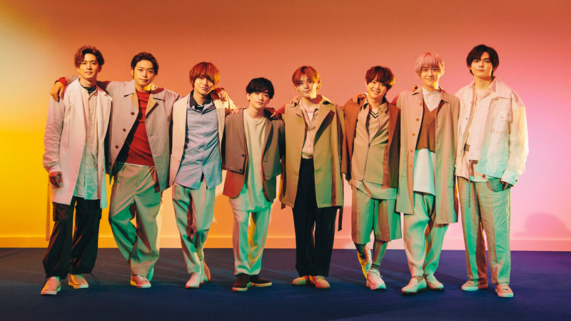

Hey!Say!Jump

- メンバー紹介
- おすすめの曲
1.メンバー８人の紹介
| 名前 |
メンバーカラー |
身長 |
|---|
| 山田涼介 |
赤 |
164cm |
| 知念侑李 |
ピンク |
159cm |
| 中島裕翔 |
水色 |
180cm |
| 有岡大貴 |
オレンジ |
164cm |
| 伊野尾慧 |
青 |
173cm |
| 八乙女光 |
黄色 |
175cm |
| 高木雄也 |
紫 |
176cm |
| 薮宏太 |
黄緑 |
178cm |
メンバー画像・紹介
2.おすすめの曲best3
第1位 DREAMER
→結成間もない時の曲で歌詞がすごくいい！
第2位 UTAGE Tonight
→Jumpっぽい感じのテンションの高い曲！
第3位 切なさ、ひきかえに
→バラード曲の中でもサビの山田と薮のハモリがきれい！